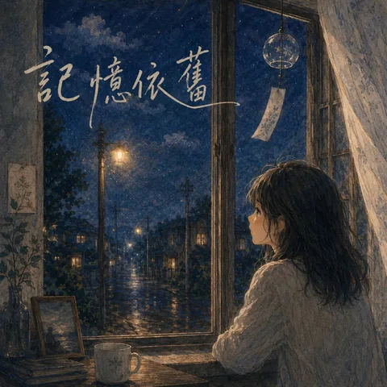
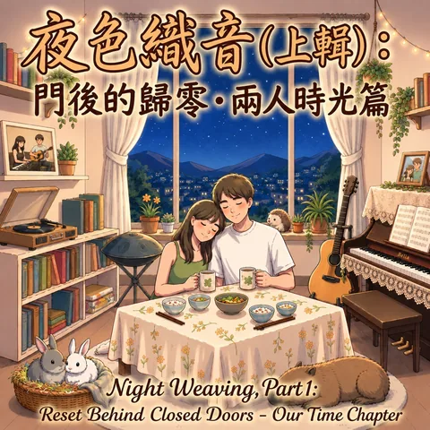
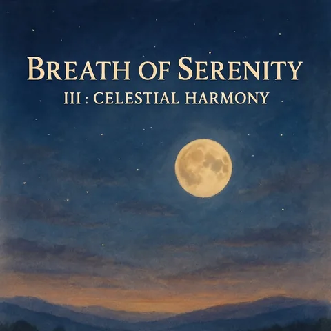
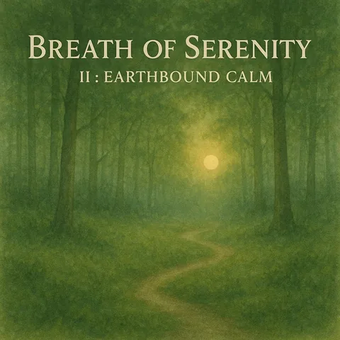
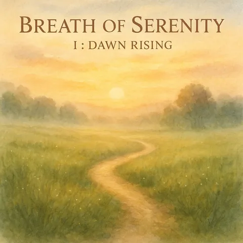
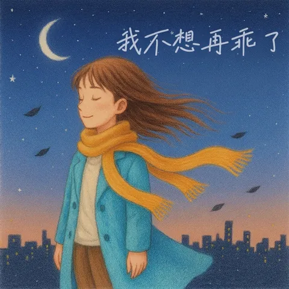
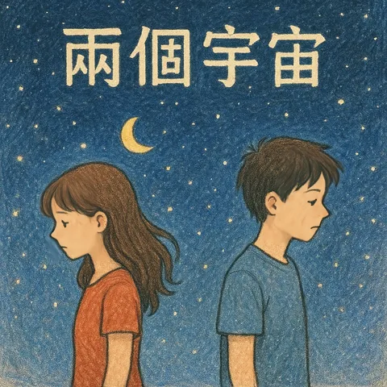
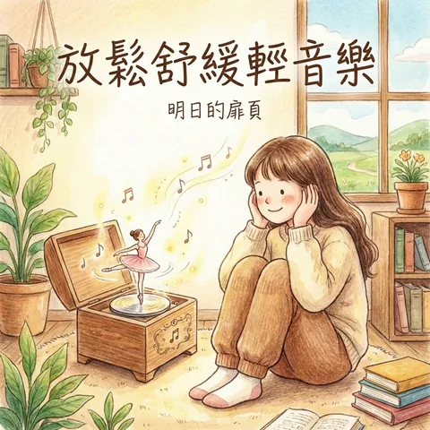
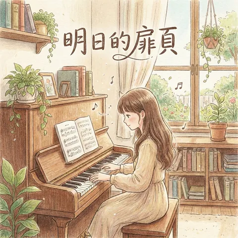

隔壁織音人
服務項目 Service
- 編曲製作｜翻唱改編．風格重塑
- 詞曲訂製｜原創詞曲
- 後期處理｜人聲修音．混音
- 人聲錄製｜DEMO 代唱．導唱
歷年作品 Discography
自 2024 年起已發行 23 張作品（專輯 16 張、單曲 7 張），橫跨療癒純音樂、兒童音樂與華語、日語流行歌曲。點封面即可在 YouTube Music 播放。
Apple Music 歌手頁 ↗ YouTube Music 歌手頁 ↗
- 人聲
- 純音樂
- 純音樂
- 純音樂
- 純音樂
-

人聲記憶依舊
-

純音樂 - 純音樂
- 純音樂
-
人聲
彼女の姿
- 純音樂
-
人聲
當冬夜有光
- 純音樂
-

純音樂Breath of Serenity III: Celestial Harmony
-

純音樂Breath of Serenity II: Earthbound Calm
-

純音樂Breath of Serenity I: Dawn Rising
-

人聲我不想再乖了
-

人聲兩個宇宙
- 人聲
-
人聲
逐樂無憂
- 純音樂
-

純音樂放鬆舒緩輕音樂（明日的扉頁）八音盒版
-

純音樂明日的扉頁
即將發行
- 2026.11.20為你留一盞燈：松果街的聖誕專輯・8 首
- 2026.12.20夜色織音（中輯）：角落的嬉遊．毛孩視角篇專輯・17 首
- 2027.01.05光陰棲息專輯・20 首
- 2027.02.05重現專輯・8 首